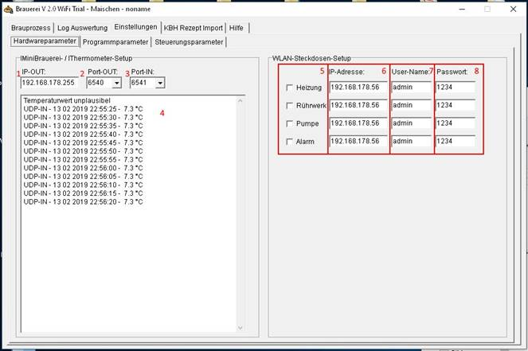
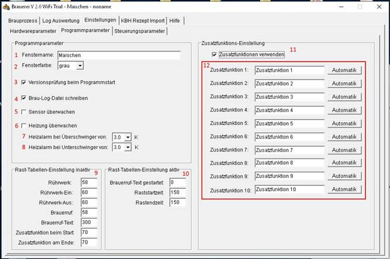
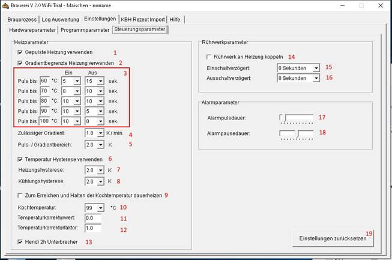

Hilfe Datei zu Brauerei2WiFi V 2.00 – by Emilio – HOME
Programmeinstellungen:
Hardwareparameter:

1. IP-Adresse an die die Brauerei die UDP-Nachrichten mit den Schaltzuständen sendet. Hier am besten eine Adresse mit Endung .255 wählen. So werden die Nachrichten an alle Netzwerkkomponenten im Sub-Netz geschickt.
2. Port auf dem die Nachrichten mit den Schaltzuständen verschickt werden
3. Port auf dem nach Temperatur-Nachrichten des IThermometers bzw. der Brauerei gelauscht wird,
4. Anzeige der Empfangenen Nachrichten
5. Aktivierung von Edimax-Steckdosen für die verschiedenen Schaltausgänge
6. IP-Adresse der Edmiax-Steckdose (Kann man am besten in der Konfiguration seines Netzwerkrouters oder mit der Freeware „Advanced Port Scanner“ herausfinden.
7. Der Admin User-Name für die Steckdose
8. Das Passwort für die Steckdose
Batchdatei-Steuerung:

1. Brauerei2WiFi-Kessel-Bezeichnung um unterschiedliche Installationen, die parallel auf einem Rechner laufen unterscheiden zu können.
2. Fensterfarbe um mehrere Installationen optisch voneinander absetzen zu könen
3. Ist der Haken gesetzt, wird bei Prograsmmstart auf eine verfügbare, neue Version auf www.schopfschoppe.de geprüft.
4. Durch setzen dieses Hakens werden Log-Dateien erstellt, welch unter Log im Brauerei-Ordner gespeichert und unter Log Auswertung angezeigt werden können.
5. Ist das Häckchen gesetzt, wird ein Alarm ausgegeben, wenn im aktiven Brauprozess länger als 60 Sekunden keine neue Temperastur empfangen wird.
6. Wird das Häckchen gesetzt, wird alamiert, wenn die Heizung nicht mehr aus bzw. einschaltet
7. Temperatur um die die Temperatur nach Ausschalten noch ansteigen darf bevor alarmiert wird.
8. Temperatur um die die Temperatur nach Anschalten noch absinken darf bevor alarmiert wird.
9. Spaltenbreiten-Einstellung für die Rasttabelle im inaktiven Zustand
10. Spaltenbreiten-Einstellung
für die Rasttabelle im aktiven Zustand
11. Zusatzfunktionen an und abwählen
12. Bezeichnungen der Zusatzfunktionen sowie manueller Start bzw. Stop der Zusatzfunktionen
Steuerungsparamter:

1. Pulsung der Heizung vor Erreichen der Zieltemperatur nutzen um Überschwinger zu minimieren
2. Gradientenbegrenzung der Heizung vor Erreichen der Zieltemperatur nutzen um Überschwinger zu minimieren. Gradientenbegrenzung bedeutet, dass vor Erreichen der Zieltemperatur frühzeitig abgeschaltete wird, wenn der aktuelle Temperaturanstieg pro Minute den definierten Wert unter Punkt 4 überschreitet.
3. Verhältnis des Einschalt- zum Ausschalt-Impuls während der Taktung in den verschiedenen Temperaturbereichen
4. Gradientgrenze: Ist der Temperaturanstieg innerhalb der letzten Minute größer als die hier fesgelegte Zahl werden die Einschaltpulse der Heizung so lange ausgesetzt bis der Gradient unterschritten oder die Zieltemperatur erreicht wird
5. Taktungstemperatur: Ist die Temperaturdifferenz kleiner dieser Eingabe wird getaktet
6. Hysteresen verwenden
7. Hyteresewert für die Heizung: Nach dem Erreichen der Zieltemperatur wird die Heizung erst wieder nach unterschreiten der Zieltemperatur minus des Hysteresewerts eingeschaltet.
8. Hyteresewert für die Kühlung: Nach dem Erreichen der Zieltemperatur wird die Kühlung erst wieder nach überschreiten der Zieltemperatur plus des Hysteresewerts eingeschaltet.
9. Ist die Solltemperatur gleich der Kochtemperatur in 10, dann durchgehend heizen
10. Kochtemperatur
11. Faktor um die der Temperaturmeßwert korrigiert wird
12. Wert
um die der Temperaturmeßwert korrigiert wird
13. Nach 2h dauerheizen, die Heizung kurz aus- und wieder einschalten um ein automatisches Ausschalten der Hendi-Kochplatten zu verhindern.
14. Rührwerk startet und stoppt mit der Heizung
15. Zeitversatz um den das Rührwerk versetzt zur Heizung startet
16. Zeitversatz
um den das Rührwerk versetzt zur Heizung stoppt
17. Pulsdauer des Alarmsignals
18. Pausendauer des Alarmsignals
19. Zurücksetzen der Einstellungen auf Auslieferzustand